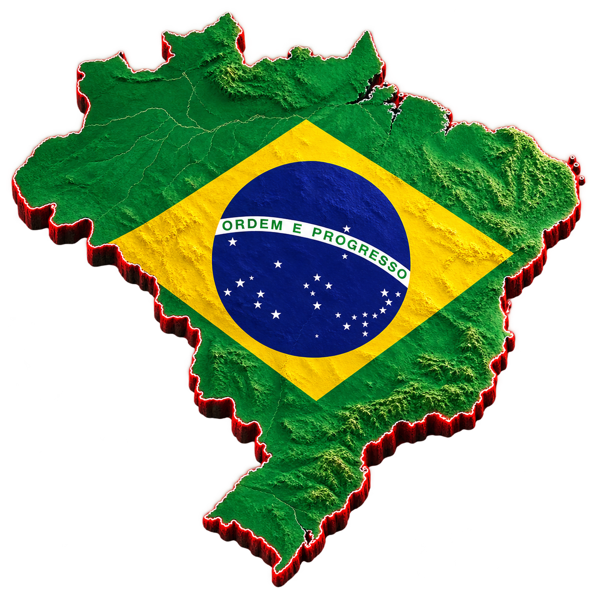
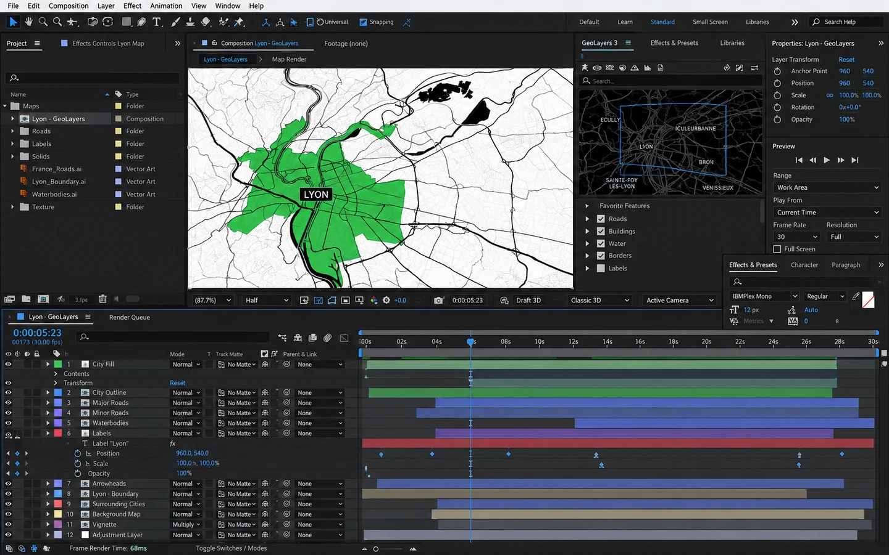
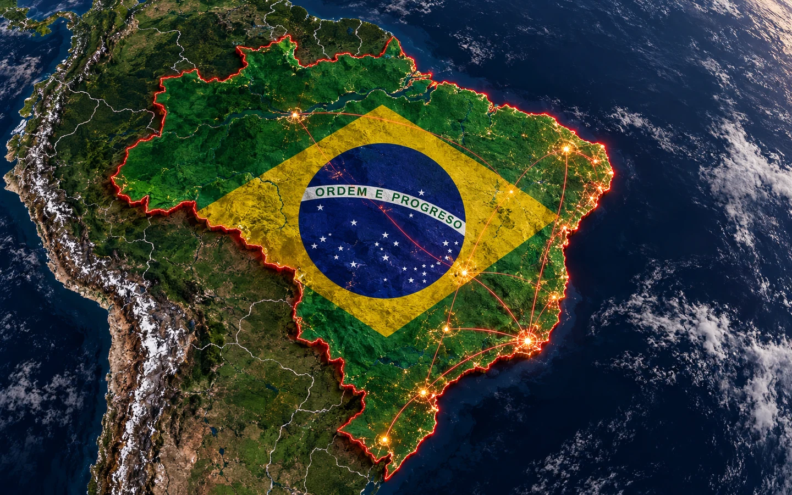
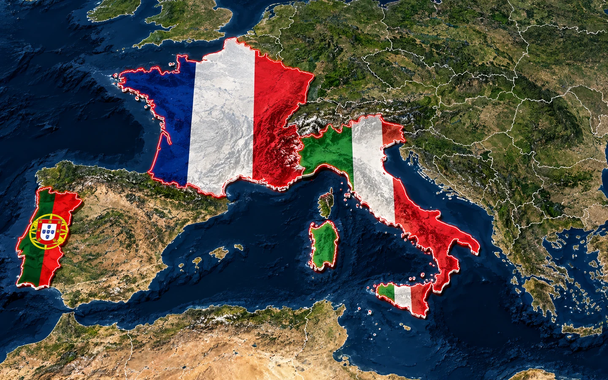
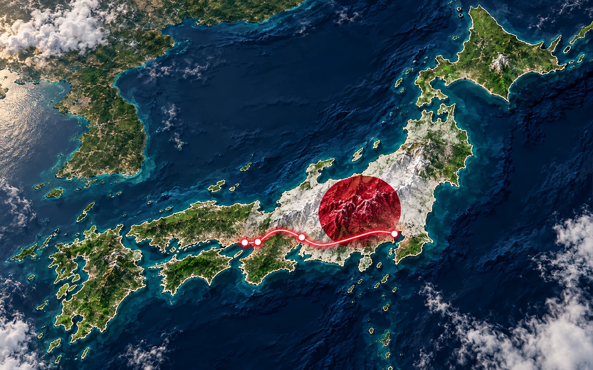
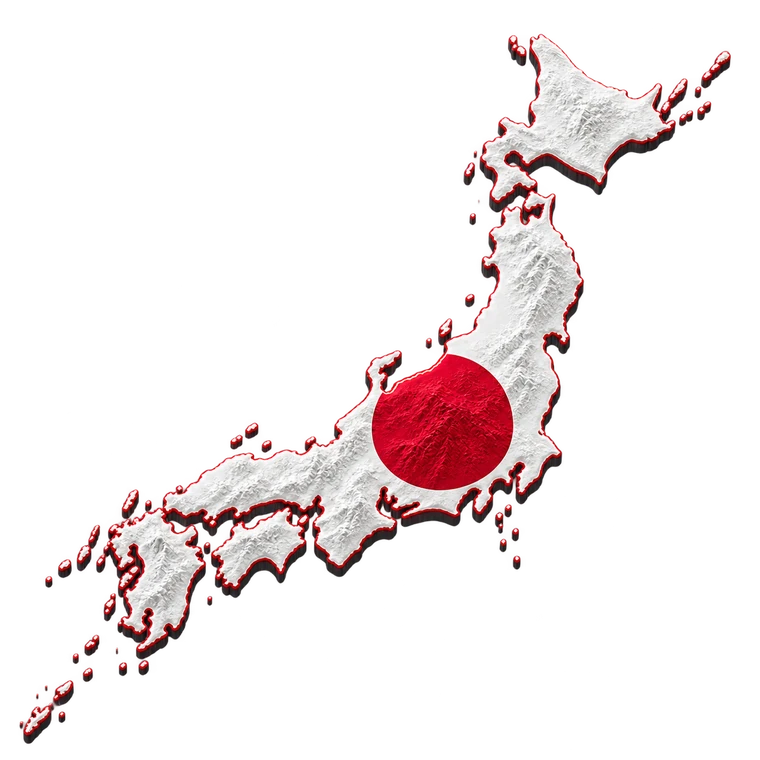
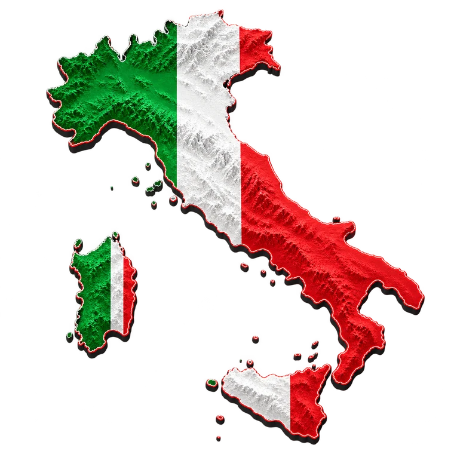

Agências de marketing
Campanhas, apresentações e vídeos para mostrar a presença de uma marca.
Curso Método Mapa Viral
Aprenda a transformar lugares, rotas e curiosidades em vídeos de mapas. Um caminho prático para criar conteúdo e levar novas ideias aos projetos dos seus clientes.
Acesso porR$ 97
Comece com as aulas e os materiais disponíveis hoje.

Da ideia ao vídeo
Um vídeo de mapa pode consumir horas entre camadas, máscaras e pontos-chave. O Método Mapa Viral organiza o caminho do roteiro às cenas para você avançar com mais clareza.

Entre camadas,
máscaras e ajustes.

Com um caminho
para seguir.
Tempos de um exemplo informado pelo criador; variam conforme o projeto, as ferramentas e os ajustes. Imagens ilustrativas.
Explore os formatos do curso
Relevo, bandeiras dentro das fronteiras e rotas que conduzem o olhar. Dê contexto ao que você quer contar.

Dê forma a rankings, curiosidades e diferenças entre territórios.

Transforme as paradas de uma viagem em um percurso visual.
Mostre onde uma empresa atende e conecte os pontos da sua história.
Exemplos visuais dos estilos cartográficos abordados nas skills.
Conteúdo e projetos comerciais
Ofereça vídeos por projeto ou inclua mapas nos pacotes de conteúdo que você já entrega.
Campanhas, apresentações e vídeos para mostrar a presença de uma marca.
Roteiros, destinos e conexões que ajudam o cliente a visualizar a viagem.
Unidades, áreas de atendimento, distribuição e expansão. Mapas também ajudam a apresentar imóveis e seus acessos.
Rankings, curiosidades e projetos cartográficos para seus canais ou para os clientes.
A conquista de clientes e o faturamento dependem da sua oferta e da sua execução.


O curso por dentro
Você começa pela introdução e segue pelas aulas práticas. As seis skills organizam instruções para narrativas, rankings, negócios, turismo, mapas urbanos e comparações.
Antes de começar
Não. O curso ensina outro fluxo de criação, com etapas de roteiro, cenas, montagem e revisão.
A versão atual tem um vídeo de introdução e nove aulas em texto. Vídeos complementares serão acrescentados conforme forem produzidos.
São arquivos de instruções organizados por tipo de vídeo. Você recebe seis formatos para adaptar ao tema e aos locais do seu projeto.
Os formatos podem ser adaptados para campanhas, turismo, apresentações empresariais e outros projetos que precisem mostrar lugares, trajetos ou cobertura.
O acesso é ao curso e às seis skills. As ferramentas usadas na produção têm seus próprios planos e limites, que devem ser conferidos antes de começar.
Após concluir a compra, siga as instruções da Kiwify para entrar na área do curso e acessar o material.
Comece pelo Método Mapa Viral.
Acesso ao curso por R$ 97.